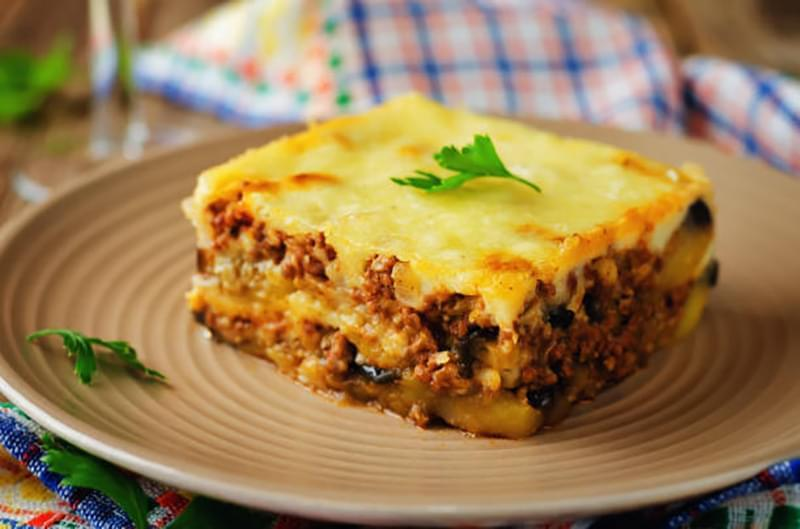

Moussaka

About this dish
Make our easy moussaka for an instant crowd pleaser.
This classic Greek dish of layered thinly sliced potato,
aubergine and lamb is topped with a creamy béchamel sauce.
Ingredients
Main dish
- 6 tbsp olive oil
- 3 medium aubergines, cut into 5mm rounds
- 800g lamb mince
- 1 onion, finely chopped
- 2 garlic cloves
- dried oregano
- ground cinnamon
- bay leaves
- 200ml red wine
- 400g can chopped tomatoes
For the bechamel sauce
- 40g unsalted butter
- 40g plain flour
- 450ml whole milk
- 40g parmesan, finely grated
- whole nutmeg, for grating
- 1 large egg plus 1 yolk, lightly beaten
Steps
- Heat a frying pan over a high heat. Drizzle 4 tbsp of the oil over the slices of aubergine and fry them in several batches for 5-7 mins or until golden brown and beginning to soften. If they look a little dry during cooking, add a dash more olive oil. Set aside on a plate lined with kitchen paper.
- Heat 1 tbsp of the oil in a large flameproof casserole dish or saucepan over a medium-high heat. Add the mince and fry for 8-10 mins until a deep golden brown, regularly stirring and breaking up with a wooden spoon. Tip into a bowl and set aside. Add the remaining oil to the casserole. Tip in the onion along with a pinch of salt and fry gently for 10-12 mins or until softened and turning translucent. Add the garlic, oregano, cinnamon, chilli and bay cooking for a further min. Return the lamb to the pan and pour in the red wine, bring to a bubble and reduce the wine by half. Stir through the tomatoes, tomato purée and brown sugar, along with 200ml water. Season. Lower the heat and simmer gently, uncovered, for 20 mins, stirring occasionally until the sauce has thickened.
- Heat oven to 200C/180 fan/gas 4. Bring a large pan of lightly salted water to the boil. Add the potato slices and cook for 6 mins, drain in a colander and leave to steam dry for 10 mins.
- Melt the butter in a small saucepan, stir in the flour and cook over a medium heat for 1 min. Remove from the heat and whisk in the milk, pouring in a bit at a time, until smooth. Return to the heat and bring to a simmer, cooking for 3 mins. Remove from the heat and whisk through the parmesan, a little grated nutmeg and some seasoning, and finally the whole egg as well as the yolk.
- Take a large rectangular ovenproof dish. Spoon a third of the meat into the dish and spread out evenly, followed by half the aubergine and half the potato, then the rest of the meat and another layer of aubergines, followed by potatoes. Finish with the béchamel, smoothing the top over with a palette knife. Put in the centre of the oven and cook for 50 mins or until deep golden brown. If it browns too much during cooking, cover the dish. Set aside for 10 mins to cool before serving.
Back to homepage